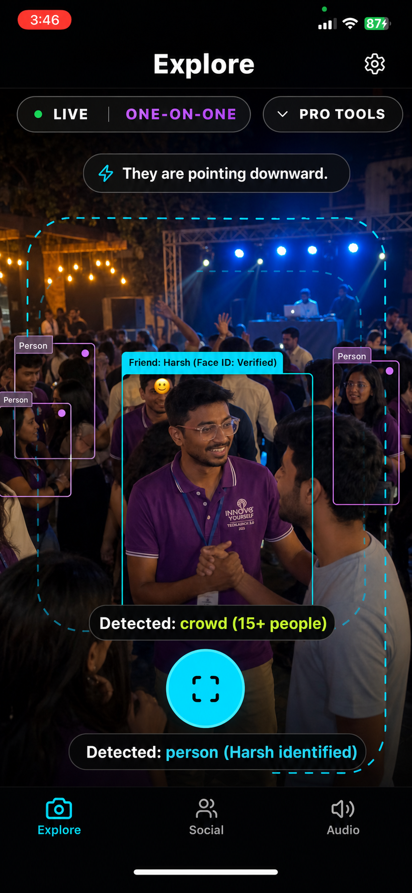
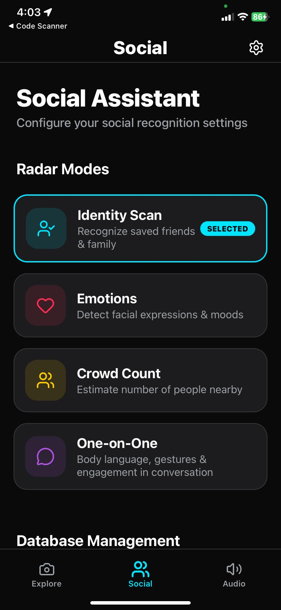
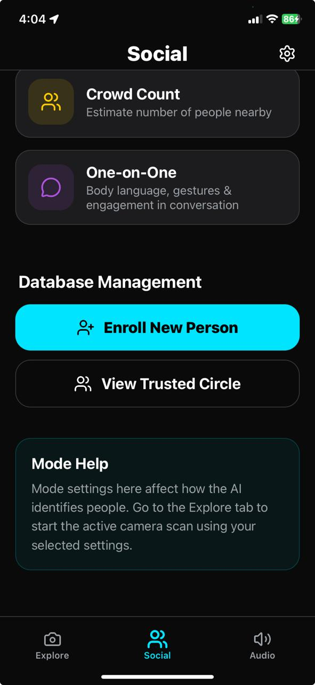

AI-powered vision augmentation system
SEE THE WORLD DIFFERENTLY.
Real-time AI vision assistance powered by Computer Vision, YOLOv8, OCR and Spatial Audio.
LIVE / ONE-ON-ONE
Spatial alert: 2m front

Person Detected
Gesture Analysis
AI that sees for you
See hazards,
understand scenes.
Object Tracking
YOLOv8 + ByteTrack persistent tracking of people, vehicles, obstacles and hazards.
OCR Reader
Read signs, books, labels and menus instantly with high-contrast voice output.
Face Recognition
Recognize trusted people and announce their presence with spatial direction.
Emotion Detection
Understand facial expressions during conversations and social moments.
Built for real life
Designed for moments that matter.
Traffic approaching from the left.
Crosswalk Detection
Escalator ahead. 5 meters.
Indoor Navigation
Akshay appears happy. Maintaining eye contact.
Social Interaction
Existing app, elevated
Turn utility screens into a premium AI command center.
Explore Mode
Live camera intelligence
Keep the real camera feed, but frame it as a spatial AI interface with status chips, detection confidence and an accessible capture action.

Social Assistant
Radar modes
Identity, emotion, crowd and conversation modes become a polished Drishti Radar system.

Trusted Circle
People memory
Enrollment and trusted contacts can feel secure, calm and investor-ready.
Drishti Radar
Social awareness, translated instantly.
Identity Scan
Recognize family and friends.
Emotion Engine
Detect emotions and engagement.
Crowd Intelligence
Estimate people nearby.
Conversation Guide
Analyze body language and gestures.
Powered by cutting-edge AI
Real-time intelligence in motion.
YOLOv8
ByteTrack
Computer Vision
Spatial Audio
React Native
Real-Time Inference
See what Drishti sees
Live spatial understanding.
Drishti recognizes Harsh, estimates a 15+ person crowd, and turns gesture context into an instant spoken alert.
Why Drishti?
Built for accessibility.
Powered by intelligence.
Designed for independence.
Real-Time Alerts
Haptic + voice feedback.
Offline Capabilities
Works with limited connectivity.
Accessibility First
Gesture-driven interface.
Fast Response
Sub-200ms latency.
Actual demo
Explore the working Drishti build.
View the source code, setup instructions, and implementation details for the AI vision assistant on GitHub.
Open GitHub Demo
github.com
Akshad265k / Drishti
Computer Vision | OCR | Spatial Audio | Accessibility